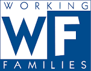

| Party Name | Details |
|---|---|
Connecticut Communist Party |
The Communist Party USA, officially the Communist Party of the United States of America, is a communist party in the United States established in 1919 after a split in the Socialist Party of America |
Connecticut Republican Party |
The Connecticut Republican Party is the Connecticut affiliate of the U.S. Republican Party. J.R. Romano, a Derby resident and campaign organizer, is the party chairman, elected June 23, 2015. |
Connecticut Democratic Party |
The Connecticut Democratic State Central Committee (CT Dems) is the affiliate of the Democratic Party in the state of Connecticut. The state chair of the party is Nick Balletto, and the Vice Chair is Nancy DiNardo.[1] The Democratic Party controls both chambers of the state legislature, all constitutional state offices and all five of Connecticut's seats in the House and both of its Senate seats. |
Connecticut Green Party |
The Connecticut Green Party is the Connecticut affiliate of the Green Party of the United States. It is governed by three co-chairs, one of whom must be a woman, all of whom are elected at their Annual Meeting each May. The party is committed to grassroots democracy, social justice, non-violence and ecological wisdom. |
Libertarian Party of Connecticut |
The Libertarian Party of Connecticut is a statewide affiliate of the U.S. Libertarian Party. According to the bylaws posted on its web site, the Connecticut Libertarian Party has the basic aims of furthering individual freedom and opposing the initiation of force against individuals, among other things. |
|
Socialist Labor Party |
The Socialist Labor Party, is the oldest socialist political party in the United States, being established in 1876; and the second oldest socialist party in the world still in existence. |
Working Families Party  |
The Working Families Party is a minor political party in the United States, founded in New York in 1998. There are active chapters in New York, Connecticut, Oregon, New Jersey, Maryland, Washington D.C., Pennsylvania, Wisconsin, Rhode Island, Nevada, West Virginia, New Mexico, Ohio, and Illinois.. |